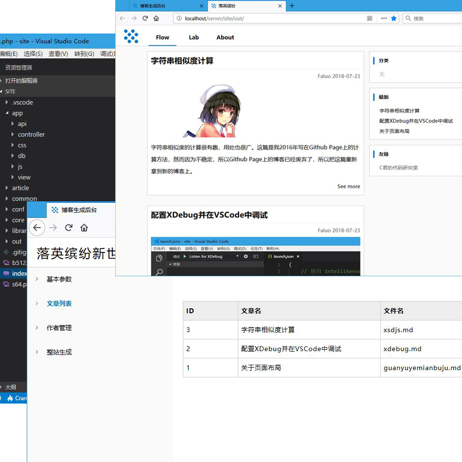
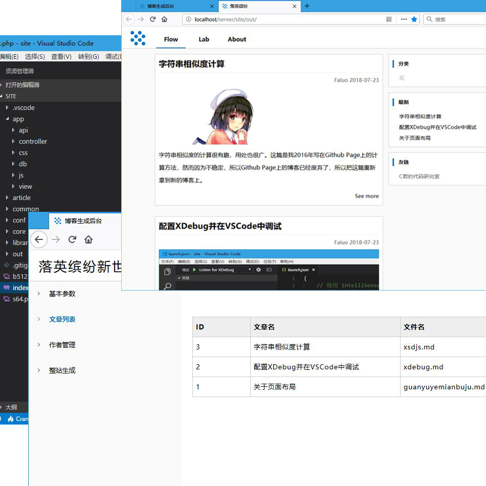

关于
大约这是维护的第4版博客了吧，记不太清了。从学生时代使用百度的博客，到后来工作后自己租服务器搭建，再到后来折腾到了Github上，最后因为稳定的原因搬到了gitee。对博客的要求也越来越简单，从把博客弄得花哨点，功能多点（如记录PV/UV），到现在自己写转换器，直接把Markdown转成html就好。博客嘛，简简单单地，有个能展示文字的页面也就够了。
然而这么“没眼看”的技术，完美的解决了我的所有需求。不求新，不求高大尚，只求刚刚好解决实际问题。这就是现在做任何事的准则。
技术栈
还真不清楚“技术栈”这个词儿是从什么时候开始流行的。反正技术圈儿的新名词日新月异，一不小心就冒出一堆生词儿。关于这个博客的技术，很羞愧，没啥新鲜的东西，后台是PHP写的一个WEB版的转换器(如图)，只运行在我自己机器上就可以了，它会把Markdown转成HTML页面。前端用得也只不过是“上古时代”的JQuery+CSS。没用啥现成的前端模板，这套博客里里外外都是我手工打造。然而这么“没眼看”的技术，完美的解决了我的所有需求。不求新，不求高大尚，只求刚刚好解决实际问题。这就是现在做任何事的准则。
联系我
虽然我觉得不会有人想联系我的。但是一个网站的“About”页面，至少还是得有这类信息吧。可以通过Email联系我，我每天都会收Email的。大概。LeonMA_Soft@126.com。©Faluo 2018